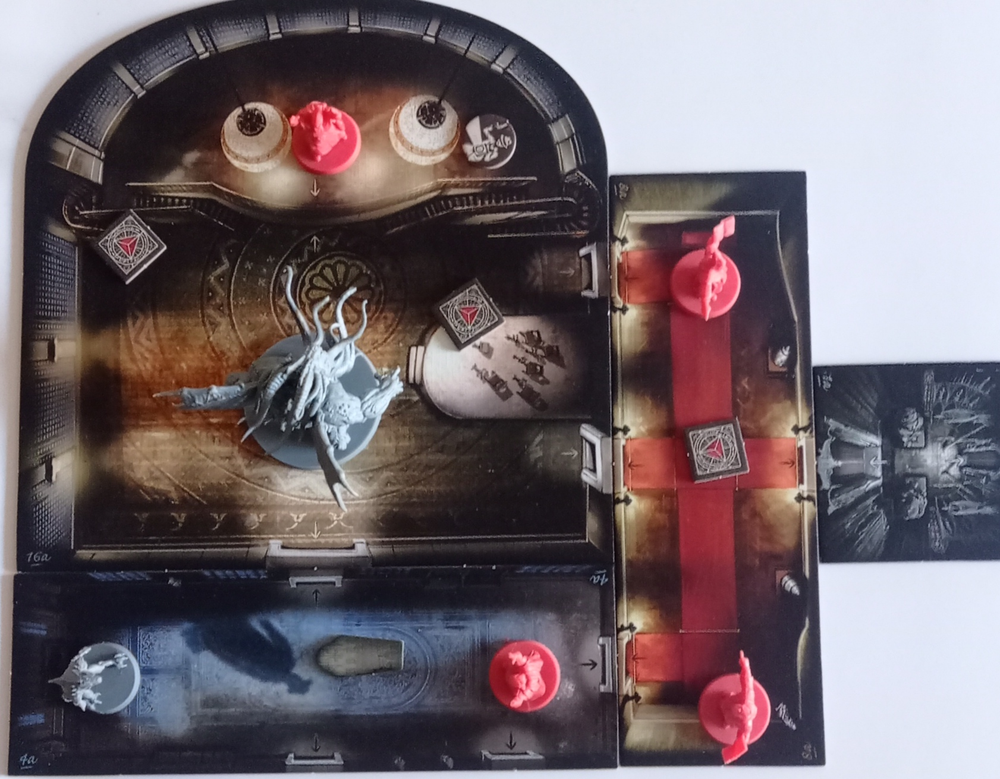
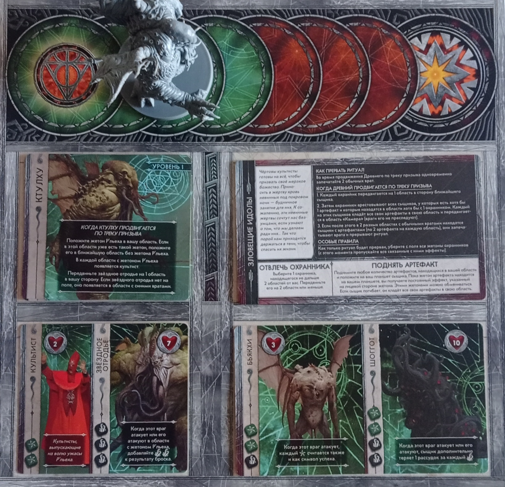
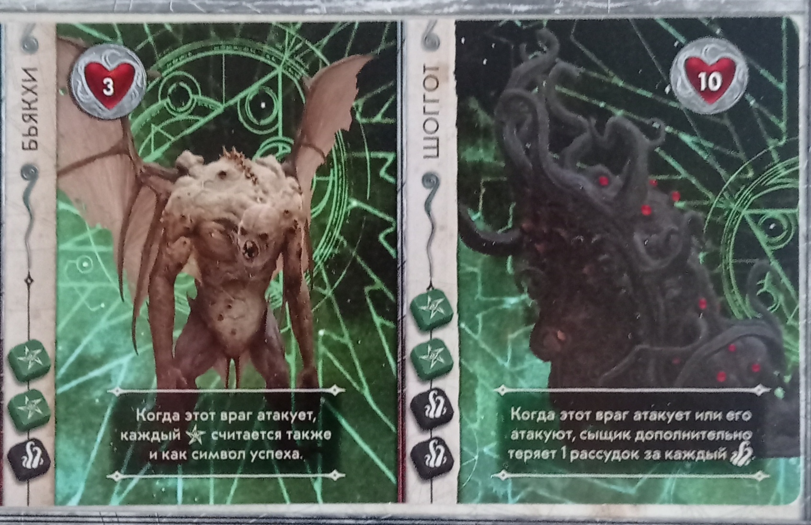
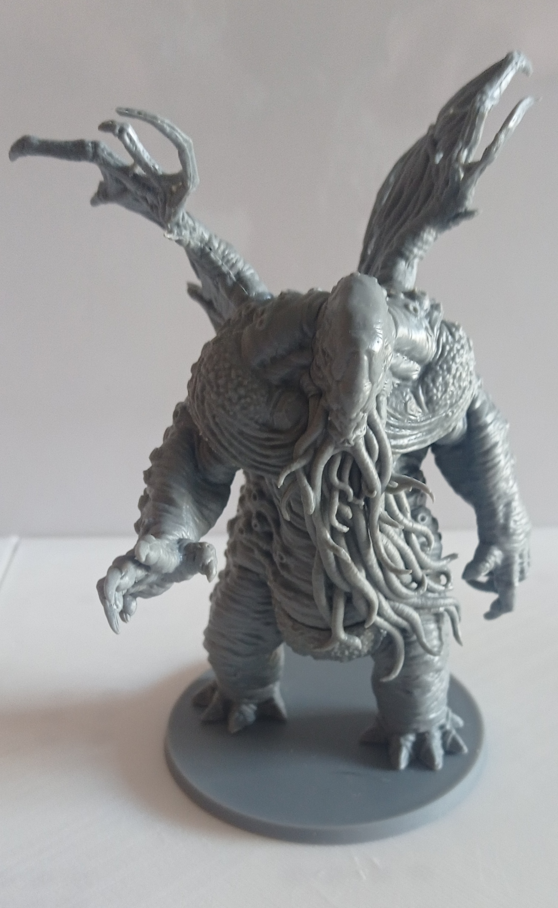
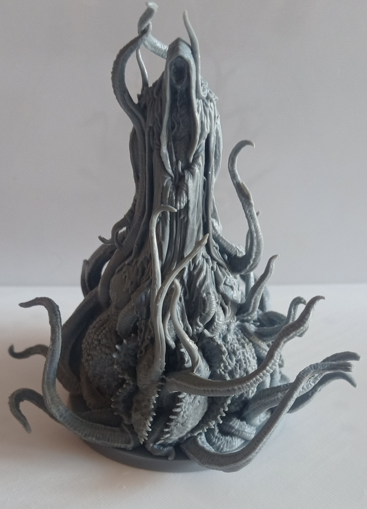
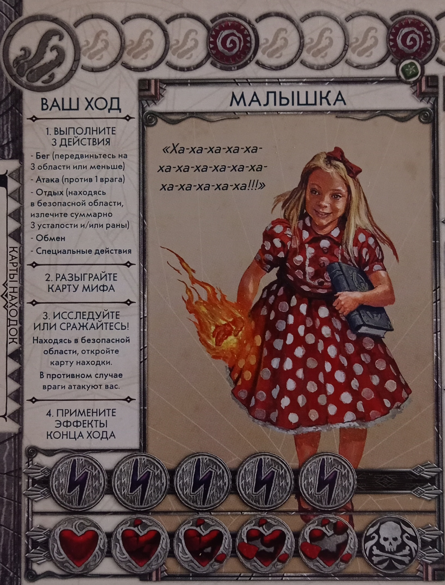
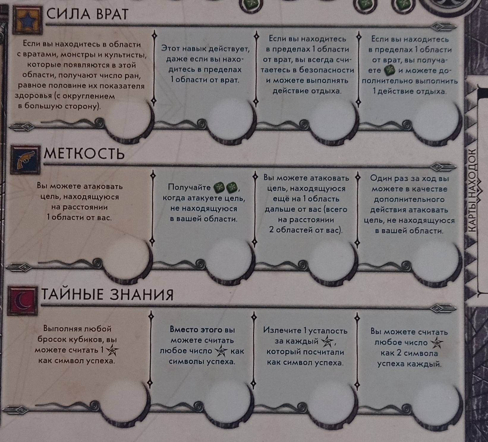
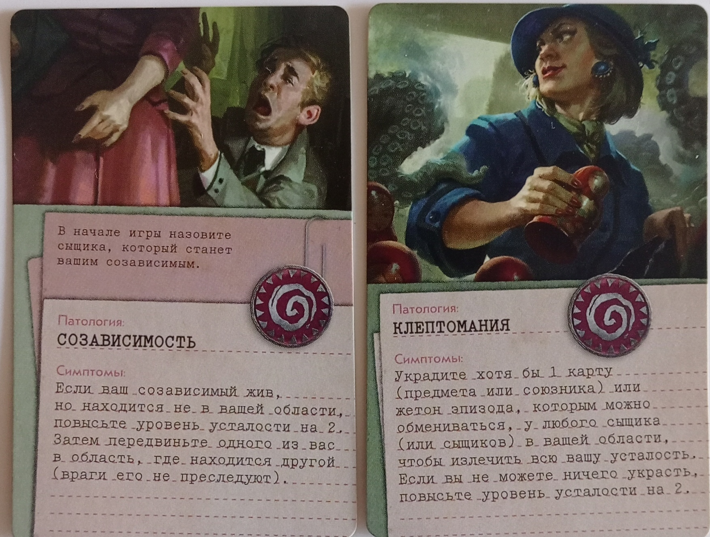
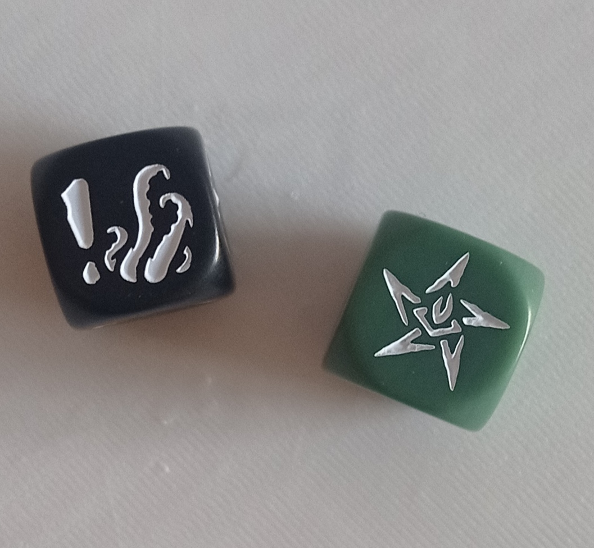

Ктулху: смерть может умереть
«Ктулху: смерть может умереть» — это командная ролевая настольная игра от 1 до 5 игроков, где играющие примеряют на себя роли сыщиков. Их цель — остановить ритуал по призыву Великого Древнего Ктулху. Естественно, это непросто: игрокам постоянно мешают культисты и вызванные ими чудовища. После завершения ритуала сыщикам предстоит одолеть ещё не окрепшего, но уже достаточно сильного Великого Древнего. Сам по себе геймплей тоже хорошо продуман. В игре есть шесть эпизодов, каждый со своим особым ритуалом и определённым набором монстров, которые встретятся вам в ходе выбранного эпизода. Перед началом игры вы выбираете одного из Великих Древних, против которого будете сражаться. На данный момент доступны два Великих Древних, у каждого из которых свои уникальные особенности. Сыграть с каждым из них можно в любом из шести эпизодов, то есть всего получается двенадцать различных сценариев. Помимо этого, в игре есть десять игровых персонажей, у каждого из которых три навыка: один уникальный, не повторяющийся у других героев, и два общих. Такое разнообразие механик делает игру очень увлекательной и реиграбельной. Она также легка в освоении, поэтому её стоит попробовать каждому. (Плюс, есть второй сезон с ещё шестью эпизодами. Скорее всего, я его куплю, постараюсь в ближайшие месяцы.)
как проходит игра
Игра проходит следующим образом: после того как вы выбрали эпизод, Великого Древнего и персонажей, с которыми будете играть, вам случайным образом выдается карта
психического расстройства. Затем (после того как вы все приготовили) начинается игра: в свой ход игрок проходит следующий цикл, состоящий из четырех фаз:
Таким образом и проходит игра, но, конечно, она не может длиться вечно. На каждую игру выдается трекер призыва, который показывает игрокам
информацию о состоянии игры. Видите ли, пока вы играете, Великий Древний тоже не стоит на месте. В фазу мифов, вытянув карту, вы можете встретить знак Древнего.
Если в общей сложности на всех картах мифов вы увидите три таких знака, Великий Древний продвигается по трекеру призыва на одно значение. По достижении
определённой отметки на трекере призыва Великий Древний появляется на вашем игровом поле и начинает вас крамсать. Если к этому моменту вы ещё не прервали ритуал,
вы не сможете наносить урон Великому Древнему, только после прерывания ритуала эта возможность станет доступной. Также работает и в обратном порядке: если вы
прервали ритуал до выхода Великого Древнего на игровое поле, он тут же выйдет на него, и теперь вы сможете его атаковать. Таким образом, игрокам для победы
необходимо прервать ритуал и убить Великого Древнего.
элементы игры и правила
игровое поле

Поле состоит из областей различной формы, их расположение зависит от выбранного эпизода. В начале на поле расставляются фигурки игроков, культистов и чудовищ,
фишки предметов, обозначающие ритуал, а также фишки порталов, из которых впоследствии будут появляться монстры и культисты. Когда будете играть, обратите внимание
на расположение областей, ведь каждая область имеет место с краю, обозначающее вход и выход из неё.
трекер призыва

Трекер призыва предоставляет вам информацию о самом эпизоде, а именно: как прервать ритуал, какие монстры в нём присутствуют, какая текущая фаза у Великого
Древнего и как долго ему остаётся до появления на игровом поле, а также сколько времени осталось до поражения.
монстры

Монстры у каждого эпизода разные, некоторые из них могут встретиться в других эпизодах, а другие — только в одном. У каждого монстра есть количество очков
здоровья, тип наносимого урона при атаке, а также уникальная особенность. Некоторые монстры могут присутствовать на игровом поле в единственном экземпляре,
а другие — в нескольких, вплоть до пяти экземпляров.
Великие Древние
Пока доступны только два Великих Древних (есть ещё два в виде дополнений, но в продаже их пока нет). Каждый Великий Древний обладает уникальными игровыми
механиками, присущими исключительно ему, а также уникальными прислужниками/помощниками. Кроме того, у каждого Древнего четыре фазы. В первой фазе они остаются до
тех пор, пока не будет прерван ритуал или пока они не появятся на игровом поле, покинув трекер призыва. Начиная со второй фазы, у них появляются очки здоровья — их
всегда 12 на каждую фазу.Тоесть чтобы перейти на следующую фазу, вам нужно нанести 12 урона Великому Древнему. Главная трудность заключается в том, что
эффекты, которые Великий Древний накладывает на вас во время всех фаз, не исчезают при переходе на новую фазу, а продолжают действовать. Более того, атака Великого
Древнего усиливается с каждой новой фазой, поэтому, когда он появляется на игровом поле, желательно как можно быстрее его уничтожить.

Ктулху — вероятно, наиболее известное создание Говарда Лавкрафта. Этот Великий Древний на протяжении всей игры будет устанавливать релихи на игровом поле.
Впоследствии из них будут появляться культисты, а игроки, оказавшиеся в области с релихом, начнут терять рассудок. У Ктулху есть один приспешник — Звёздное Отродье.
Это весьма неприятное существо, к тому же оно довольно сильное и жирное.

Король в жёлтом — этот Древний на протяжении всей игры будет проклинать игроков, раздавая им специальные жетоны. Старайтесь получить как можно меньше этих
жетонов проклятия, ведь в будущем, когда Король в жёлтом появится на игровом поле, за эти жетоны он будет снижать ваше здоровье и рассудок, а также культисты и
чудовища станут наносить больше повреждений. В качестве прислужников у Короля в жёлтом используются усиленные версии культистов, всего их четверо. Единственное
их отличие от обычных культистов — это повышенный урон, однако они действуют преимущественно числом.
планшет игрока

Планшет игрока отображает основную информацию о вашем персонаже: количество очков здоровья, усталости и рассудка, его навыки и предысторию. Здесь же вы найдёте
подсказку о фазах вашего хода, а также список возможных действий, которые вы можете предпринять. О них подробнее ниже:
Также на планшете под изображением персонажа вы найдёте индикаторы его здоровья и усталости, а вверху расположен индикатор рассудка. Когда вы снижаете рассудок
до красной метки, активируется эффект, указанный на карте психического расстройства, и вы сможете улучшить один из своих навыков на один уровень. Подробнее о
навыках далее:
навыки персонажей
У каждого персонажа есть три навыка: один уникальный и два общих. Навыки улучшают или изменяют результаты ваших действий либо предоставляют новые возможности.

психические расстройства

Каждому игроку перед началом игры случайным образом выдаётся карта психического расстройства. На ней указан эффект, который произойдёт, когда ваш рассудок
опустится до красной отметки на планшете игрока. В большинстве случаев расстройство приносит негативные последствия, но если выполнены определённые условия,
отрицательный эффект может смениться на положительный, что сыграет вам на руку.
кубики

Всего существует два типа кубиков: чёрные и зелёные. Чёрные кубики являются основными, их три штуки. Вы используете их при атаке, защите от огня или
воздействий Великого Древнего. Зелёные кубики считаются дополнительными, их бросают в зависимости от уровня вашего рассудка или навыков. Также этими кубиками
пользуются ваши враги при атаке на вас. Всего на кубиках возможно выбросить пять исходов:
На зелёных кубиках те же исходы, за исключением щупалец.
Остальные, более глубокие механики игры мы уже разберём по ходу геймплея за столом. :3